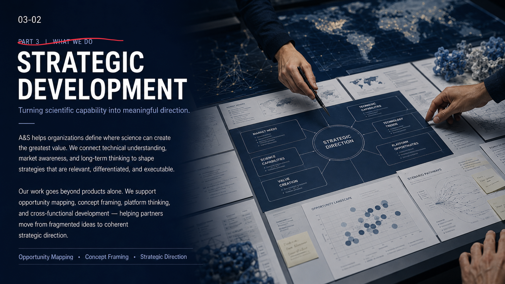
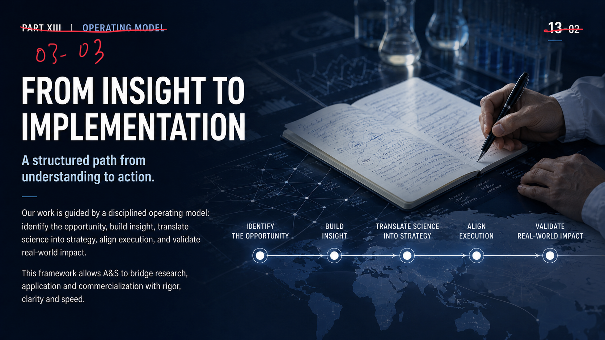
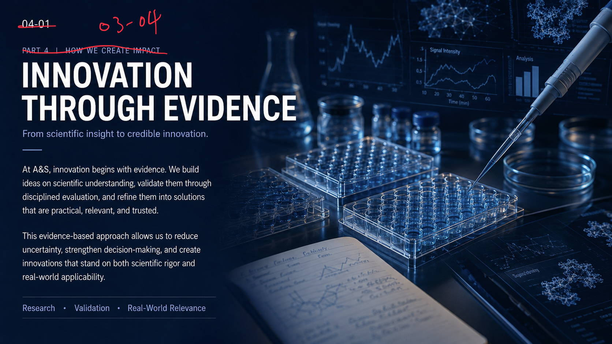
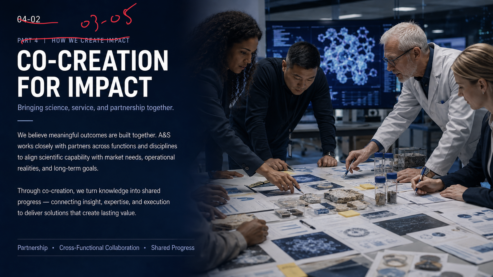
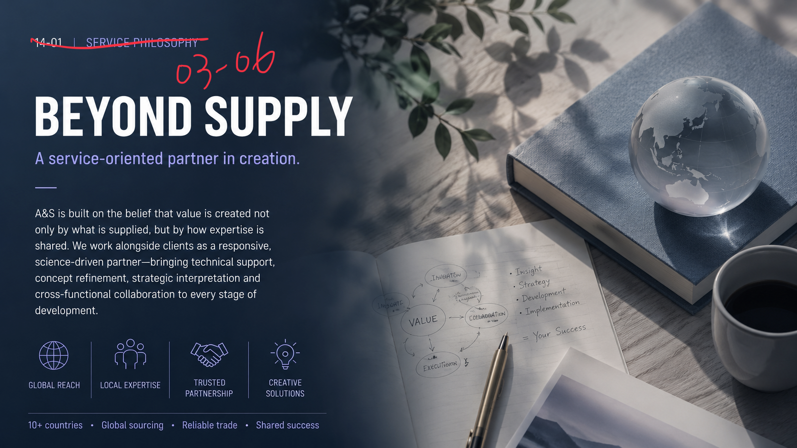

01 How We Create Value
Professional Services
From scientific understanding to real-world value.
A&S translates science into strategic support, technical expertise, and practical solutions. We work across sensory science, neuroscience, biotechnology, and life science to help partners move from questions to answers, and from complexity to opportunity.
Our role goes beyond supplying ingredients or ideas. We provide professional services that connect research, application, market understanding, and cross-functional problem solving - creating value that is credible, relevant, and executable.
02 How We Create Value
Strategic Development
Turning scientific capability into meaningful direction.
A&S helps organizations define where science can create the greatest value. We connect technical understanding, market awareness, and long-term thinking to shape strategies that are relevant, differentiated, and executable.
Our work goes beyond products alone. We support opportunity mapping, concept framing, platform thinking, and cross-functional development - helping partners move from fragmented ideas to coherent strategic direction.

03 How We Create Value
From Insight to Implementation
A structured path from understanding to action.
Our work is guided by a disciplined operating model: identify the opportunity, build insight, translate science into strategy, align execution, and validate real-world impact.
This framework allows A&S to bridge research, application and commercialization with rigor, clarity and speed.

- Identify the Opportunity
- Build Insight
- Translate Science into Strategy
- Align Execution
- Validate Real-World Impact
04 How We Create Value
Innovation Through Evidence
From scientific insight to credible innovation.
At A&S, innovation begins with evidence. We build ideas on scientific understanding, validate them through disciplined evaluation, and refine them into solutions that are practical, relevant, and trusted.
This evidence-based approach allows us to reduce uncertainty, strengthen decision-making, and create innovations that stand on both scientific rigor and real-world applicability.

05 How We Create Value
Co-Creation for Impact
Bringing science, service, and partnership together.
We believe meaningful outcomes are built together. A&S works closely with partners across functions and disciplines to align scientific capability with market needs, operational realities, and long-term goals.
Through co-creation, we turn knowledge into shared progress - connecting insight, expertise, and execution to deliver solutions that create lasting value.

06 How We Create Value
Beyond Supply
A service-oriented partner in creation.
A&S is built on the belief that value is created not only by what is supplied, but by how expertise is shared. We work alongside clients as a responsive, science-driven partner - bringing technical support, concept refinement, strategic interpretation and cross-functional collaboration to every stage of development.

- Global Reach
- Local Expertise
- Trusted Partnership
- Creative Solutions
- 10+ countries
- Global sourcing
- Reliable trade
- Shared success